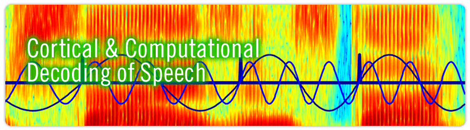

|
|
||||||||
|  |
| Recent Publications |
|
||
|
Ghitza, O. (2016). "Acoustic-driven delta rhythms as prosodic markers" Language, Cognition and Neuroscience. http://dx.doi.org/10.1080/23273798.2016.1232419 [ PDF File ] Ghitza, O. (2014). "Behavioral evidence for the role of cortical theta oscillations in determining auditory channel capacity for speech." Front. Psychol. 5:652. doi:10.3389/fpsyg.2014.00652 [ PDF File ] Doelling, K. B., Arnal, L. H., Ghitza, O. and Poeppel, D. (2014). "Acoustic landmarks drive delta-theta oscillations to enable speech comprehension by facilitating perceptual parsing." NeuroImage. 85:761. doi: 10.1016/j.neuroimage.2013.06.035 [ PDF File ] Ghitza, O. (2013). "The theta-syllable: a unit of speech information defined by cortical function." Front. Psychol. 4:138. doi: 10.3389/fpsyg.2013.00138 [ PDF File ] Ghitza, O., Giraud, A. and Poeppel, D. (2013). "Neuronal oscillations and speech perception: critical-band temporal envelopes are the essence." Front. Hum. Neurosci. 6:340. doi: 10.3389/fnhum.2012.00340 [ PDF File ] | |||
| Forthcoming | |||
|
Penn et al. "The Possible Role of Brain Rhythms in Perceiving Fast Speech: Evidence from Adult Aging
." [Submitted]
|
|||
| Page last updated September 15, 2017 | |||